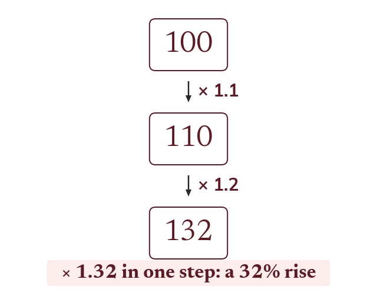

Combining successive multipliers
Two percentage changes in turn are two multipliers in turn. Multiply them for one combined multiplier. A 10% rise then a 20% rise is 1.1 × 1.2 = 1.32.
When an amount is changed by one percentage and then changed again by a second percentage, each change is its own multiplier, and the overall effect is the original amount multiplied by both multipliers in turn. Because multiplication can be applied one factor at a time, this is the same as multiplying the two multipliers together first, then applying that single combined multiplier once. A 10% rise followed by a 20% rise is 1.1 × 1.2 = 1.32, a single 32% rise overall.